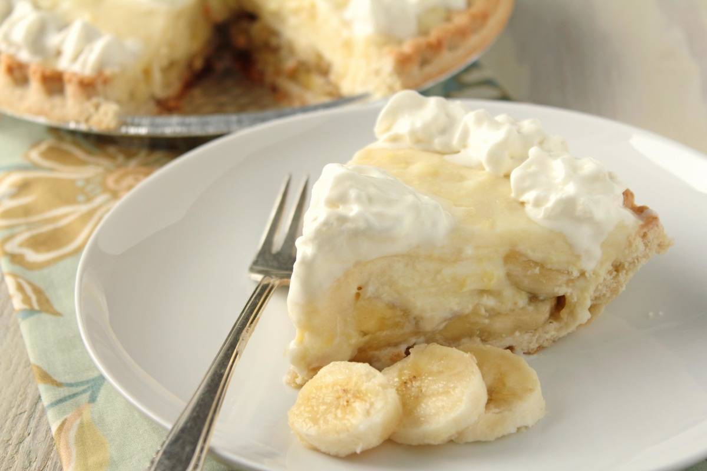

Description
A cream pie , crème pie, or creme pie is a type of pie filled with a rich custard or pudding that is made from milk, cream, sugar, wheat flour, and eggs. It comes in many forms, including vanilla, lemon, lime, peanut butter, banana, coconut, and chocolate. One feature of most cream pies is a whipped cream topping. The custard filling is related to crème patissière, a key component of French cakes, and tarts. It is a one-crust pie, where the crust covers the bottom and sides but not the top. The crust may be a standard pastry pie crust, or made with crumbled cookies or a graham cracker crust.
Ingredients
- Dough for single-crust pie
- 1 cup sugar
- 1/4 cup cornstarch
- 1/2 teaspoon salt
- 3 cups 2% milk
- 2 large eggs, lightly beaten
- 3 tablespoons butter
- 1-1/2 teaspoons vanilla extract
- 2 large firm bananas
- 1 cup heavy whipping cream, whipped
Steps
- On a lightly floured surface, roll dough to a 1/8-in.-thick circle; transfer to a 9-in. pie plate. Trim crust to 1/2 in. beyond rim of plate; flute edge. Refrigerate 30 minutes. Preheat oven to 425°.
- Line crust with a double thickness of foil. Fill with pie weights, dried beans or uncooked rice. Bake on a lower oven rack until edge is golden brown, 20-25 minutes. Remove foil and weights; bake until bottom is golden brown, 3-6 minutes longer. Cool on a wire rack.
- In a large saucepan, combine sugar, cornstarch, salt and milk until smooth. Cook and stir over medium-high heat until thickened and bubbly. Reduce heat; cook and stir 2 minutes longer. Remove from heat. Stir a small amount of hot filling into eggs; return all to pan. Bring to a gentle boil; cook and stir 2 minutes longer.
- Remove from heat. Gently stir in butter and vanilla. Press plastic wrap onto surface of custard; refrigerate, covered, 30 minutes.
- Spread half the custard into crust. Slice bananas; arrange over filling. Pour remaining custard over bananas. Spread with whipped cream. Refrigerate 6 hours or overnight.